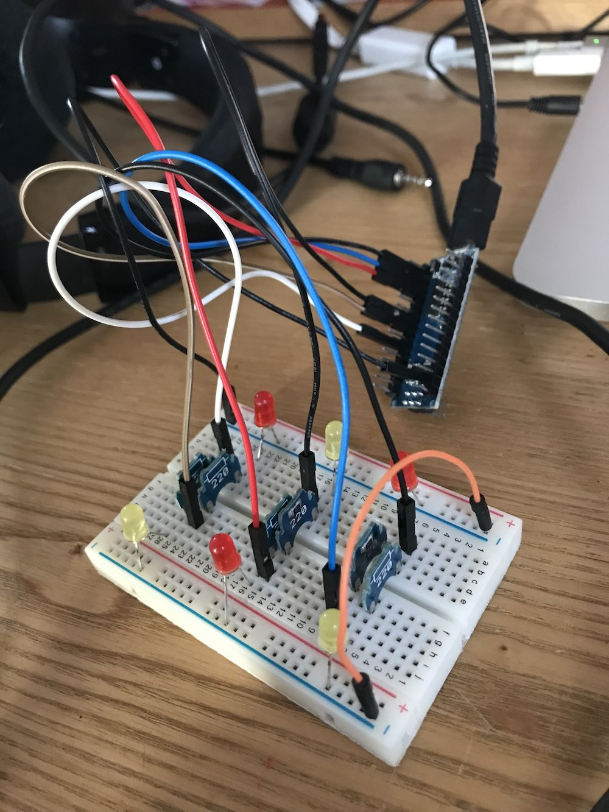

A little night-light with altogether too much work put into it
Introduction
We had a stupid Google wifi booster/home assistant thing on the upstairs landing that no one ever used for the voice-activated stuff. I switched on the microphone mute (not sure if it actually mutes the mic, but whatever), which made LEDs around the base of the thing light up with a pleasing orange glow. This inadvertantly made it a nice night-light for the landing, shedding just bright enough a glow to keep you aware of walls, doors and floor-based obstacles without being overly bright. The thing was eventually unplugged and stashed away somewhere, leaving us without a light on the landing.
Separately, I had many years earlier recieved as a present from a friend something called a Sun Jar. It was a frosted glass jar with a little solar panel, LED and inverted parabolic mirror to scatter the light the LED produced. The idea was that you'd leave the jar by a window during the day, and it would fill up with sun that would then be slowly released during the night. It didn't work very well when it was new, and by this time the battery had permanently died, giving a discharge time of seconds after a charge time of hours.
Separately seperately, I had just spent a week on holiday. The where, what, why, etc. aren't important here, but I slept on a pull-out couch in the living room, in front of the dying embers in the fireplace. I really liked the very lively glow from it and wanted to try and recreate it, although ideally without the fire.
Making
The prototype came together very quickly, as I already had all the required parts. The project uses an Arduino Nano, a breadboard, and six LEDs (three red and three yellow) plus the necessary resistors and jumpers cables. The LEDs are all hooked up to the PWM digital pins on the Arduino Nano. This was my first time using PWM, and it was super easy with the standard Arduino Programming Language.

The LEDs are all mounted to the outer edge of the breadboard, and alternate in colour. With this assembly placed inside the frosted glass jar, the light sources diffuse to create a pleasing merge of colours with some suggestion of depth. Currently, a wire emerges from the slightly open lid of the jar leading to a wall outlet with a USB socket, but I could potentially make the project battery-powered if I wanted the whole thing to be self-contained. I could also swap out the breadboard for a PCB or just a mess of cardboard, glue and solder. As you can't see what's in the jar from the outside, none of that matters too much.
The code works by continually reducing the brightness of each LED over time. Each LED has a chance of 're-igniting' to full brightness with each cycle of the main loop, which combines with the dimming to create a flickering effect. In order to replicate the gradual dimming of a fire, the chance of LED 're-ignition' decreases over time, as does the brightness that the newly 'lit' LED jumps up to. The LEDs dim much more slowly once they reach low brightnesses, mimicking glowing embers. Eventually, the chance of 're-ignition' will reach 0% and all LEDs will go out. Setting a few magic numbers in the code can make this whole process take anything from seconds to many hours- the latter is used in practice.
Above is an example of the dimming process, vastly sped up as described in the previous paragraph.
The Code
...is hidden in the below collapsible- the first bit of Javascript on this site, copied directly from W3Schools.
int leds[] = {3, 5, 6, 9, 10, 11}; // Digital outputs with PWM. Check your Arduino model to ensure that the same follows on yours.
void setup() {
pinMode(3, OUTPUT);
pinMode(5, OUTPUT);
pinMode(6, OUTPUT);
pinMode(9, OUTPUT);
pinMode(10, OUTPUT);
pinMode(11, OUTPUT);
randomSeed(analogRead(0));// for new flicker each time
//Serial.begin(9600);
for (int a = 0; a < 256; a++){// Fades up the LEDs instead of them just jumping to full
for (int b = 0; b < 6; b++){// Full brightness is used to mimick the flare of light when a fire is first lit
analogWrite(leds[b],a);
}
delay(2);
}
}
float brights[] = {255, 255, 255, 255, 255, 255};//Brightness of each LED
int threshold = 0; //Controls chance of 're-ignition'- goes up over time until it reaches the magic1 number
int magic1 = 30000; // Change this to change how quickly the 'flame' dies down. 30000 lasts a good few hours.
void loop() {
for (int b = 0; b < 6; b++){
analogWrite(leds[b],round(brights[b])); // Write current values in brights[] to LEDs
}
int dim = random(6); //Choose an LED to work on in this loop cycle
if (brights[dim] < 10){// If the LED is already dim, give it a 10% chance of dimming further this cycle- used to create dim embers that continually glow
if (random(1,10)== 1){
brights[dim] = brights[dim] - (brights[dim]*0.1);
}
}
else if (brights[dim] == 0.0 & magic1-threshold > 2 & random(1,3)== 2){// 50% chance for a fully dead LED to re-light, up until right near the end of the whole programme
brights[dim]=1;
}
else{
brights[dim] = brights[dim] - (brights[dim]*0.25); // Normal dimming
}
int relight = random(magic1); // Chooses a number between 0 and magic1. If it's above the threshold number (which starts as 0) and passes the next dice roll, the LED brightens
if (relight >= threshold & random(1,4)== 2){
int level = round(210.0*(magic1-threshold)/magic1);// 'full brightness' gradually decreases as the programme goes on, so you don't get one crazy-bright LED amongst a load of dim ones
if (random(0,4) == 2){
threshold++;//Gives a 25% chance of the re-ignition threshold increasing. Modify this to make the programme run significantly longer or shorter.
}
brights[dim] = level;// Write brightened LED to brights[]
//Serial.print(threshold);
//Serial.print(" to ");
//Serial.println(level);
}
delay(25);// Looks like a gently flickering fire. Make shorter for faster-moving flames. Any longer than 25 starts to look a bit laggy.
}
Future:
Improvements I might make include battery power, some way of activating it that doesn't involve opening the lid and hitting the reset button- maybe motion-activation would be cool? Using a purpose-built PCB or other soldered solution might be nice in the long run, so I can get my breadboard back.